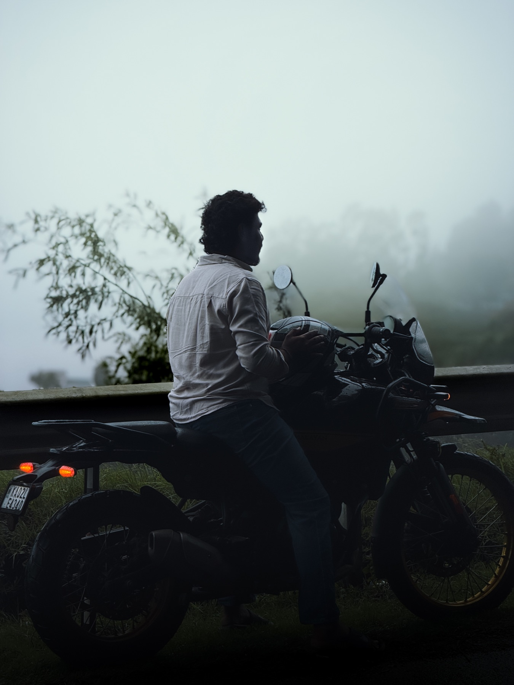
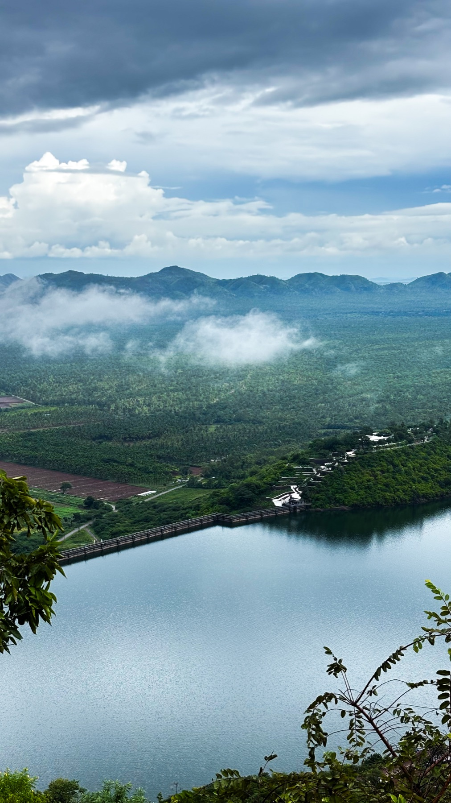
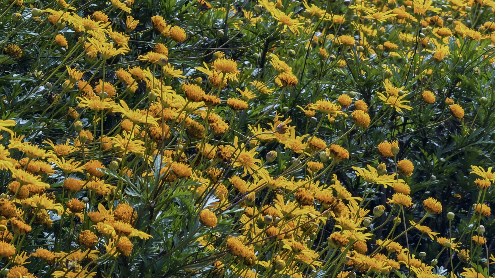
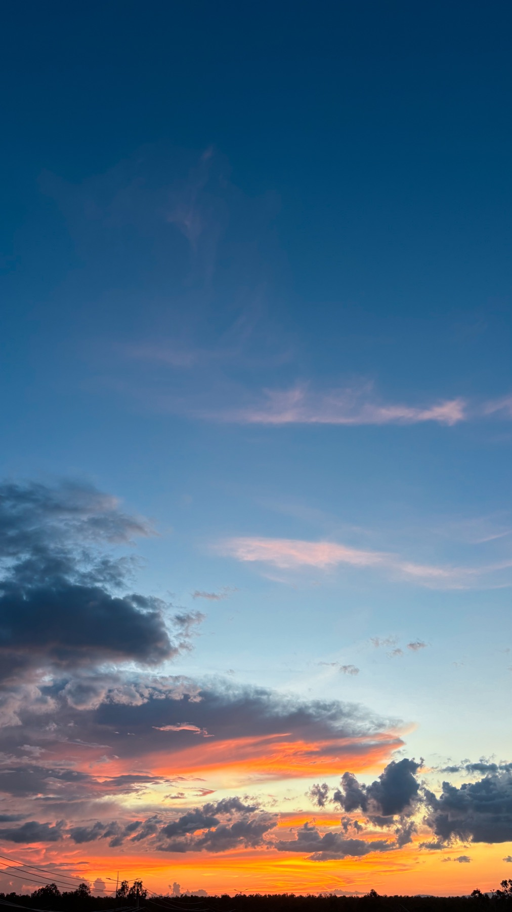
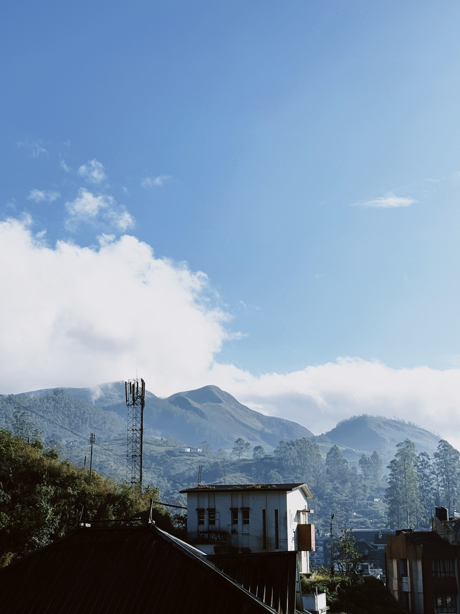
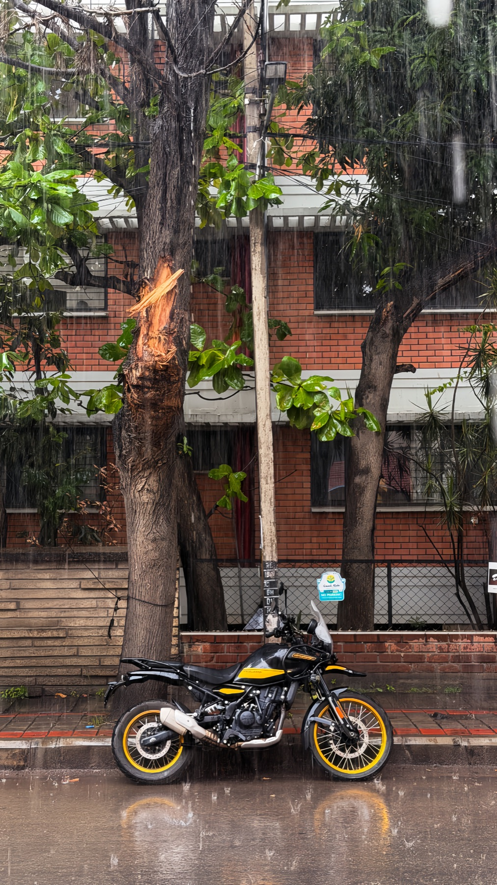
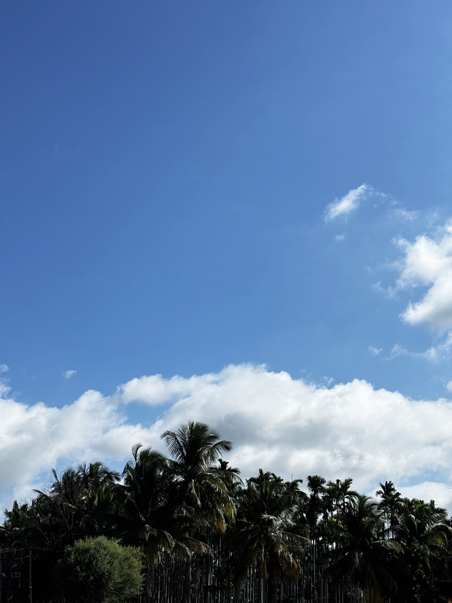
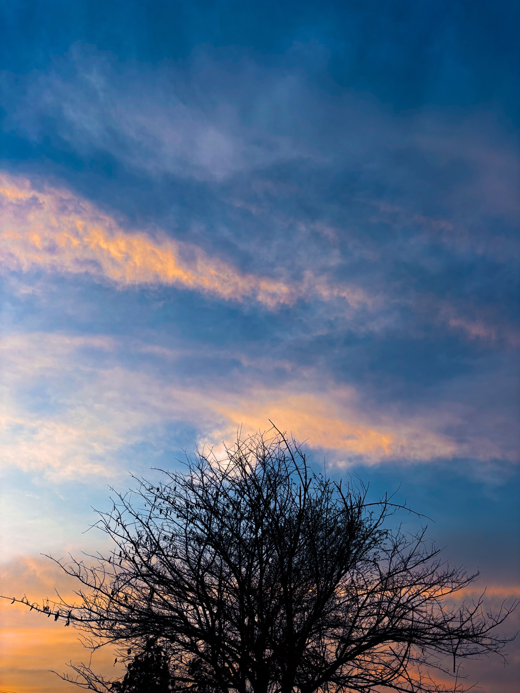
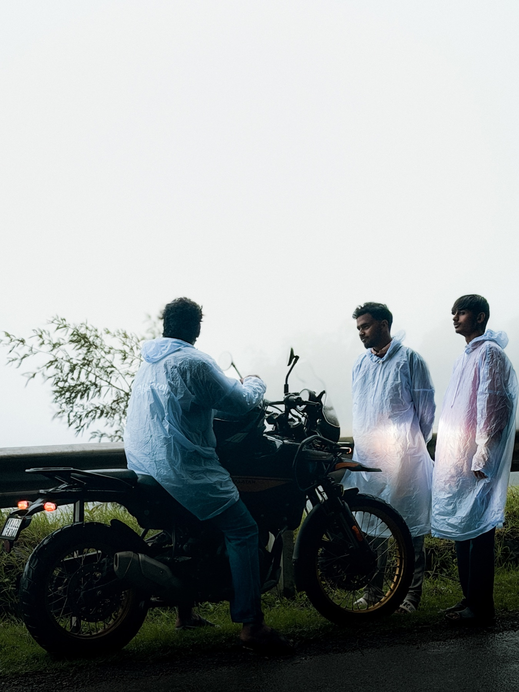

PERSONAL ARCHIVE / 01
Frames from
the everyday.
A small and growing collection of moments, colours, people, and places that catch my eye.
A PERSONAL PRACTICELight · texture · life✦
GALLERY / 12 FRAMES
A few places
I’ve carried with me.
From long rides and monsoon roads to high hills and the night sky — a personal collection of moments worth holding onto.
01Ride at dusk ↗

02Fogbound ↗
03Cloud reservoir ↗
04Wild bloom ↗
05Painted sky ↗ 06Night field ↗
07Quiet hills ↗
08After the rain ↗
09Palms in blue ↗
10Twilight tree ↗
11Monsoon miles ↗ 12Milky Way valley ↗